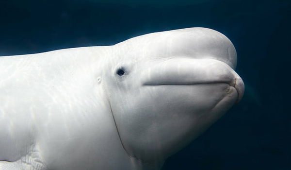

전시생물 소개
사람과 자연이 함께 꿈꾸는 바다
롯데월드 아쿠아리움 전시생물 TOP7
롯데월드 아쿠아리움의 전시생물 7종을 소개합니다.

- 01벨루가
- 눈처럼 새하얀 벨루가! 러시아어로 '하얗다'라는 뜻입니다. 태어날 땐 짙은 회색이지만 다 크면 하얀 색으로 바뀝니다. 벨루가가 사는 곳은 북극해를 중심으로한 얼음으로 뒤덮인 차가운 바다입니다. 또한 벨루가는 다른 고래와 달리 등 지느러미가 없어 얼음 아래 부딪히지 않고 헤엄칠 수 있고, 목을 자유롭게 움직일 수 있기 때문에 모래 속에 숨어있는 좋아하는 갑각류를 사냥하는데 유리합니다.
- 02캘리포니아 바다사자
- 똘망똘망한 눈과 뛰어난 균형감각을 자랑하는 날렵한 캘리포니아 바다사자! 캘리포니아 바다사자는 물범과 함께 발이 지느러미로 된 기각류에 속합니다. 앞 지느러미와 뒷 지느러미가 길어 몸을 지탱하며 걷는데 유리해, 물 속 뿐 아니라 물 위에서도 빠르고 멀리 이동할 수 있습니다. 그리고 바다사자의 얼굴에 난 두꺼운 수염은 사냥하는데 없어서는 안될 중요한 감각기관입니다.
- 03참물범
- 온대부터 한대까지 먼 바다를 오가며 사는 참물범은 추운 환경에 적응 진화되었습니다. 귓바퀴가 퇴화된 작은 구멍의 귀와, 피부 아래 두꺼운 지방층도 있어 체온 유지에 유리합니다.이 넉넉한 지방 덕분에 통통하고 귀여운 모습을 가지게 되었습니다. 우리나라에서는 참물범과 아주 닮은 천연기념물 331호 '점박이 물범'을 백령도에서 볼 수 있습니다.
- 04훔볼트 펭귄
- 훔볼트 펭귄은 따뜻한 지역인 페루 해류가 흐르는 연안의 작은 섬에서 물고기를 잡아먹으며 삽니다. 가슴 위 쪽에는 굵고 검은 띠가 있는 것이 특징이고, 어린 개체는 전체적으로 어두운 색이며 가슴에 띠가 없습니다. 바위틈이나 동굴에 간단한 둥지를 틀고 2개의 알을 낳으며, 깃털은 마치 잠수복을 입은 듯 물이 스며드는 것을 막아 줍니다.
- 05피라냐
- 민물 육식성 물고기로, 원주민말로 "이빨이 있는 물고기"라는 뜻 입니다. 피라냐의 아래 턱이 매우 발달 하였고, 삼각형의 예리한 이빨로 질긴 먹잇감도 순식간에 먹이를 먹는답니다. 이들은 동족 또한 포식하는데 무리 중에 병들거나 약한 개체가 있을 경우 본능적으로 공격하기도 합니다.
- 06얼룩 매가오리
- 롯데월드 아쿠아리움 메인수조의 마스코트 가오리 얼룩 매가오리입니다. 유영하는 모습이 마치 하늘을 나는 매의 날개짓과 비슷하다고 해서 '얼룩 매가오리'라는 이름이 붙었습니다. 얼룩 매가오리가 가장 좋아하는 음식은 조개류입니다. 단단한 이빨을 가지고 있기 때문에 딱딱한 조개의 껍질도 부숴 조각을 아가미나 입으로 뱉어 버리고 조개의 살만 골라 먹을 수 있답니다.
- 07매부리 바다거북
- 매부리 바다거북은 따뜻한 열대바다에 서식하는 멸종위기종입니다. 생김새는 다른 바다거북과 비슷하지만 부리 끝이 휜 모양이 매를 닮았고 등껍질 가장자리가 톱니모양인 것이 특징이에요. 롯데월드 아쿠아리움에서는 종보전을 위해 성장과 번식에 관한연구를 하고 있습니다.